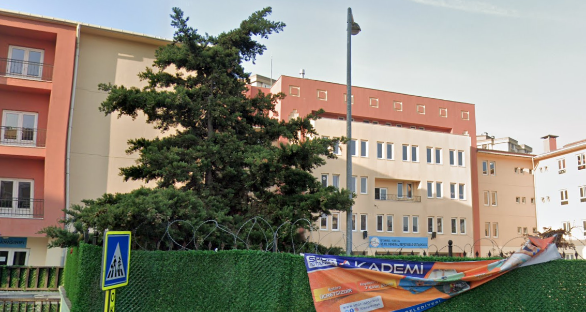

Okuduğum Okullar

İlkokul Öğrenimim
İlkokuluma İstanbul'un Kartal ilçesindeki 50. Yıl General Refet Bele İlkokulu'nda başladım. 2007-2012 yılları arasında ilkokulumu 5. sınıfa kadar tamamladım.

Ortaokul Öğrenimim
5. sınıfı tamamladığımız dönemde eğitim sistemi değişmişti, bazı ilkokullar ortaokula dönmüştü ve 4+4 sistemi gelmişti. Benim okuduğum ilkokul da ortaokul olmuştu. Yani aynı okulda 2012-2015 ortaokuluma devam ettim. Konumu görmek için tıklayın.

Lise Öğrenimim
Zamanımızda TEOG sınavıyla liseye giriş yapıyorduk. Kartal'daki liselere yerleşememiştim ve İstanbul Pendik'teki Gülizar Zeki Obdan Lisesi'ne yerleştim. Lisenin eğitimi çok iyi olmasına rağmen son sınıfta üniversiteye daha iyi hazırlanabilmek için Kartal Sınav Temel Lİsesi'ne başladım. 2019 senesinde de liseden mezun oldum. Konumu görmek için tıklayın.

Üniversite Öğrenimim
2019 yılıdna üniversite giriş sınavında 83 binlik sıralama ile Bandırma Onyedi Eylül Üniversitesi Bilgisayar Mühendisliği bölümüne yerleştim. İlk sene İngilizce hazırlık okudum ve şuan 2. sınıf öğrencisiyim. Konumu görmek için tıklayın.